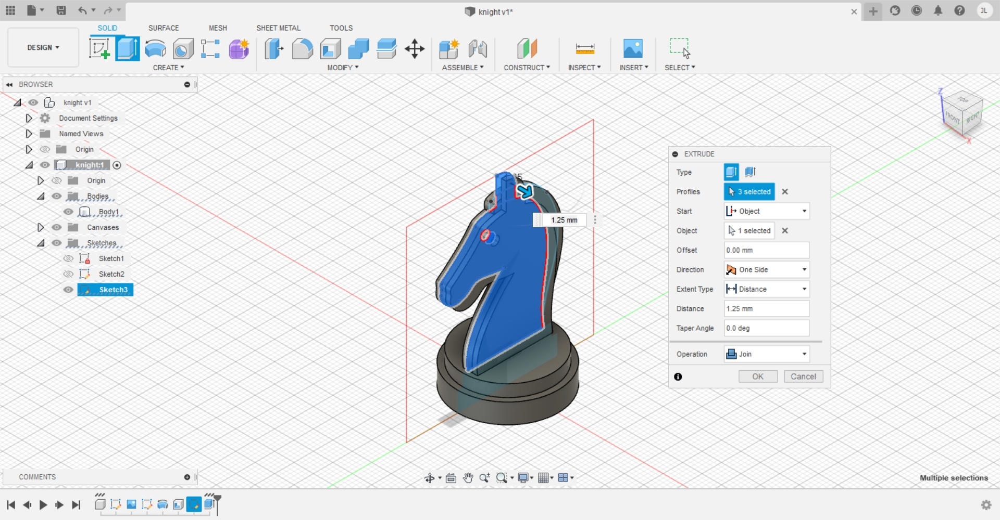
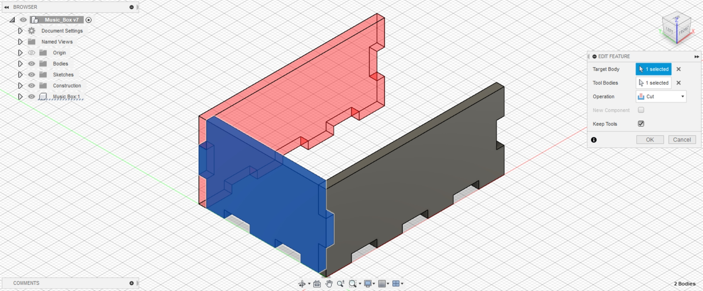
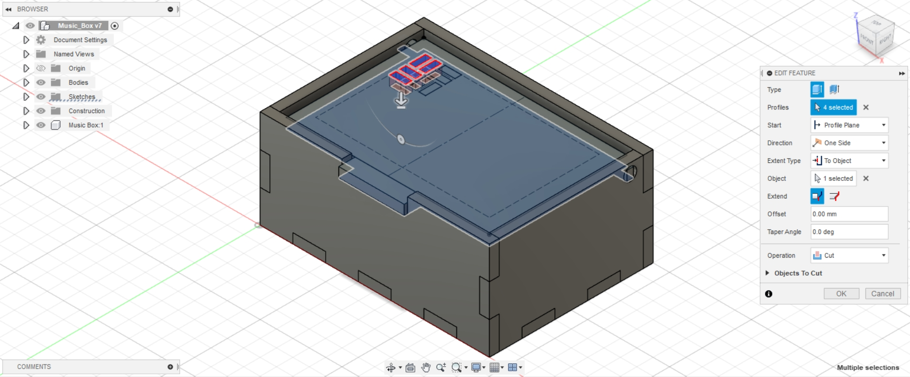

3D Modeling
3D modeling is the process of using 2D sketches to create a 3D model in
the form of a body in a component. In Fusion 360, we have to make sure
that the 2D sketches are fully constraint, meaning that the lines are
black in colour, and fully dimensioned, only then can we use features to
create our 3D model.
Constraints

Here are all the constraints in Fusion 360 and they are used in different
scenarios and are helpful in preventing the sketch from being changed
accidentally.
Extrusion
Exercise 1: Name Tag
Step 1: Creating a 2D sketch of the name tag

I created this sketch on the x-y plane with the corresponding dimensions and
constraints meeting the requirements of length 70mm and width 30mm with
a rim ring hole of 4mm, all of it surrounded by a rim 1.5mm thick.
Step 2: Extrude the rim
I extruded the rim to a height of 4mm which is the required height of
the name tag.
Step 3: Extrude the base

Next, I extruded the main base to a height of 1.5mm as required.
Step 4: Creating a 2D sketch of my name

With the final feature, my name, I sketched it using the text feature
starting from the top surface of the rim as the sketch plane, making
use of Arial font, making it bold with a height of 12mm and center aligned
both vertially and horizontally. My name is also offset 10mm from the
center of the ring hole.
Step 5: Extrude the 2D sketch of my name

Finally, I extruded the 2D sketch of my name to the surface of the main
base with an offset of -0.5mm.
Final model
Exercise 2: Lego Brick
With reference and guidence from this video, I am able to create this 3D
model of a lego brick.
Final model
Exercise 3: Extrudes & Planes
Step 1: Creating a cube

Using the x-y plane, I created the 2D sketch of a square 20mmx20mm and
extruded it to a height of 20mm to create this 3D model of a cube.
Step 2: Creating the first copy
By right clicking, I select the move/copy feature to create the second
cube right beside the first one.
Step 3: Creating the whole stack
By repeating the previous step continously, I finaly created this model.
Step 4: Creating a shell
Using the shell feature, I selected the bottom surface to create the
shell with an inside thickness of 4mm.
Final model
Revolve
Exercise 1: Mug with handle
Step 1: Creating the revolve profile
I created this sketch on the x-z plane, following the requirements of
diameter 50mm and height 80mm with thickness of 2.5mm. I also added an
arc at the base and rounded the base corner with a 2mm fillet. The top
rim of the mug is rounded off in tengent to the mug thickness.
Step 2: Revolve the main Mug

Using the revolve feature, I revolved the 2D profile around the z-axis
and created the 3D model of the main mug.
Step 3: Creating the 2D sketch of the handle

I created this sketch on the x-z plane, following the tip for the
corresponding dimensions and decided on setting the height of the handle
to be 50mm.
Step 4: Additional step for creation of handle

From this image, you can see that I added an additional rectangle that
intersects into the cross-section of the mug which is highlighted red,
this is done to the bottom part of the handle as well. The purpose for
doing so is to prevent for the formation of a gap when extruding the
handle due to the curvature of the mug.
Step 5: Extrude the handle
Using the extrude feature, I selected the 2D sketch of the handle and
extruded it symmetrically by 6mm.
Final model
Exercise 2: Hex Nut
Final model
Exercise 3: Chess piece - knight
Step 1: Creating the frame for the knight image

I created a rectangular frame with dimensions, 30mm by 50mm, which allows
me to know the rough estimate of the size of the knights chess piece.
Step 2: Inserting the knights piece image

Using the insert feature, I added the image of the chess piece with the
corresponding settings.
Step 3: Creating the 2D sketch for the base of the chess piece

With reference to the image, I created this 2D sketch for the base of
the chess piece.
Step 4: Revolve the base of the chess piece
Using the revolve feature, I created the 3D model of the base of the
chess piece using the z-axis.
Step 5: Shell the base of the chess piece

Using the shell feature, I selected the bottom face of the base to shell
with an inside thickness of 3mm.
Step 6: Creating the 2D sketch of the horse head

Using the spline feature, I created the outline of the features of the
horse head with reference to the image.
Step 7: Extrude the horse head

Selecting only the horse head and the mane as the sketch plane, I extruded
them to a thickness of 2.5mm symmetrically.
Step 8: Extrude the horse head and features

Selecting the horse head including the eyes and ears without the mane as
the sketch plane, I extruded them to a thickness of 1.25mm offset from
the surface of the previous extrusion.
Step 9: Mirror the horse head and features
Using the mirror feature, I mirrored the horse head and features extrusion
using the y-z plane.
Final model
Assignment: Music Box
Parameters
Here are all the parameters that I used to define all the dimension of
the music box.
Step 1: Create 2D sketch of front panel
Selecting the XZ plane, I created the 2D sketch of the front panel
with dimensions defined by the functions in the parameters,
box_length and box_height.
Step 2: Extrude front panel
Using the 2D sketch of the front panel, I extruded it to the function of
thickness defined in the parameters, thickness.
Step 3: Creating 2D sketch of the bottom tab of the front panel
Selecting the front face of the front panel, I created a 2D sketch of the
first tab at the bottom of the panel. The dimensions are defined using
the parameters, tab_length and tab_height.
Step 4: Extrude cut the bottom tab of the front panel
Using the 2D sketch of the bottom tab, I extrude cut, through all, the
front panel to form the first tab.
Step 5: Rectangular pattern to create remaining bottom tabs of the front panel
Using rectangular pattern, I selected the extrude cut feature, direction
in the x-axis, distance type by spacing, quantity by the parameter,
num_tab_L-1, distance by the parameter function, -( tab_length + tab_space ).
This forms the remaining bottom tabs of the front panel.
Step 6: Creating the 2D sketch of the side tab of the front panel
Selecting the front face of the front panel, I created a 2D sketch of the
side tabs of the panel. The dimensions are also defined using the previously
mentioned parameters for a tab.
Step 7: Extrude cut the side tabs of the front panel
Using the 2D sketch of the side tabs, I extrude cut, through all, the
front panel to form the side tabs for the panel.
Step 8: Creating a middle plane of the front plane
Using the YZ plane, I created another plane set to the distance of the
parameter function of box_length / 2.
Step 9: Mirror the left side tab to the right
Using the previously created plane, I mirrored the side tab feature to
create the tabs on the right side.
Step 10: Creating the 2D sketch of the left panel
Using the YZ plane, I created a 2D sketch of the left panel defined using
the parameter, box_width.
Step 11: Extruding left panel
Using the 2D sketch of the left panel, I extruded it to the function of
thickness defined in the parameters, thickness.
Step 12: Creating 2D sketch of the bottom tab of the left panel
Selecting the front face of the left panel, I created a 2D sketch of the
first tab at the bottom of the panel. The dimensions are defined using
the parameters, tab_length and tab_height.
Step 13: Extrude cut the bottom tab of the left panel
Using the 2D sketch of the bottom tab, I extrude cut, through all, the
left panel to form the first tab.
Step 14: Rectangular pattern to create remaining bottom tabs of the left panel
Using rectangular pattern, I selected the extrude cut feature, direction
in the y-axis, distance type by spacing, quantity by the parameter,
num_tab_W-1, distance by the parameter function, -( tab_length + tab_space ).
This forms the remaining bottom tabs of the left panel.
Step 15: Creating right side tabs of the left panel
Using the combine feature, I selected the target body as the left panel
and the tool bodies as the front panel, operation cut, checking the keep
tools box, to form the right side tabs of the left panel.
Step 16: Creating a middle plane of the left plane
Using the XZ plane, I created another plane set to the distance of the
parameter function of box_width / 2.
Step 17: Creating the back panel
Using the previously created plane, I mirrored the front panel body to
create the back panel.
Step 18: Creating left side tabs of the left panel

Using the combine feature, I selected the target body as the left panel
and the tool bodies as the back panel, operation cut, checking the keep
tools box, to form the left side tabs of the left panel.
Step 19: Creating the right panel
Using the previously created middle plane from the YZ plane, I mirrored
the left panel body to create the right panel.
Step 20: Creating the 2D sketch of the bottom panel
Selecting the XY plane, I created the 2D sketch of the bottom panel
with dimensions defined by the functions in the parameters,
box_length and box_width.
Step 21: Extrude bottom panel
Using the 2D sketch of the bottom panel, I extruded it to the function of
thickness defined in the parameters, thickness.
Step 22: Creating the tabs of the bottom panel
Using the combine feature, I selected the target body as the bottom panel
and the tool bodies as the front, back, left, right panels, operation cut,
checking the keep tools box, to form the tabs of the bottom panel.
Step 23: Creating an offset top plane
Selecting the top surface of the back panel, setting a distance down by
3mm, I create an offset plane so that I can create the lid.
Step 24: Create the 2D sketch of the lid
Selecting the previously created plane, I created the 2D sketch of the
lid panel with dimensions defined by the functions in the parameters,
hinge_width, lip_length and lip_width, as well as an offset of 1mm on
each side from the side panels.
Step 25: Extrude lid panel
Using the 2D sketch of the lid panel, I extruded it to the function of
thickness defined in the parameters, thickness, in the symmetric direction.
Step 26: Create the 2D sketch of the hinge hole of the left panel
Selecting the front face of the left panel, I created a 2D sketch of the
hinge hole of the left panel. The dimensions are also defined as in the
image.
Step 27: Extrude cut the hinge hole of the left panel
Using the 2D sketch of the hinge hole, I extrude cut, through all, selecting
only the left panel and right panel to form the hinge holes.
Step 28: Create the 2D sketch of the lip slot of the front panel

Selecting the front face of the front panel, I created the 2D sketch of
the lip slot with dimensions defined by the functions in the parameters,
lip_length, as well as to the depth of the bottom face of the lid panel.
Step 29: Extrude cut the lip slot of the front panel
Using the 2D sketch of the lip slot, I extrude cut, to object, selecting
the back face of the front panel to form the lip slot.
Step 30: Create the 2D sketch of the pattern on the lid panel
Selecting the top face of the lid panel, I created a 2D sketch of the
pattern of the lid panel. The dimensions are also defined as in the image.
This pattern is meant to look something like a speaker grill.
Step 31: Extrude cut the first set of pattern on the lid panel

Using the 2D sketch of the pattern, I extrude cut, to object, selecting
the bottom face of the lid panel to form the first set pattern.
Step 32: Rectangular pattern to create remaining first set of pattern of the lid panel
Using rectangular pattern, I selected the extrude cut feature, direction
in the length and width of the lid panel, distance type by spacing,
quantity 5 and 3, distance -12mm and 12mm. This forms the first set
pattern of the lid panel.
Step 33: Extrude cut the second set of pattern on the lid panel
Using the 2D sketch of the pattern, I extrude cut, to object, selecting
the bottom face of the lid panel to form the second set pattern.
Step 34: Rectangular pattern to create remaining second set of pattern of the lid panel

Using rectangular pattern, I selected the second extrude cut feature, direction
in the length and width of the lid panel, distance type by spacing,
quantity 4 and 3, distance -12mm and -12mm. This forms the remaining
pattern of the lid panel.
Final Model